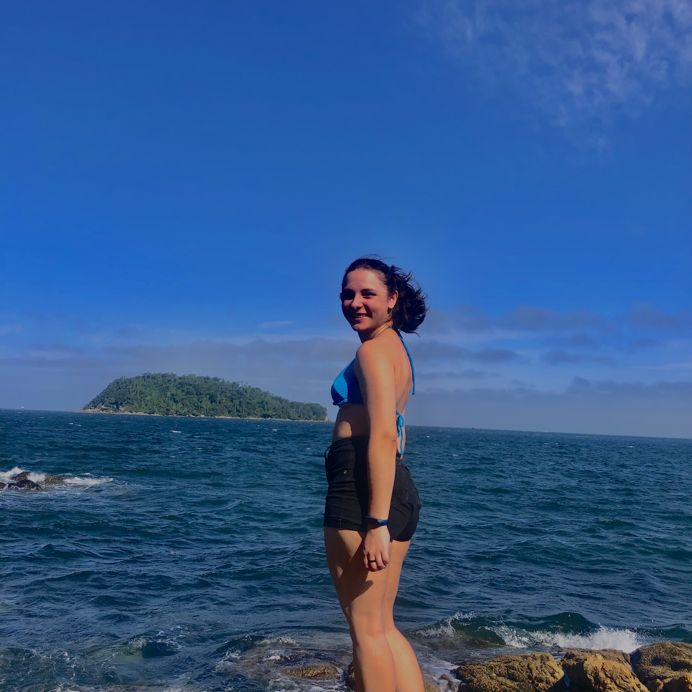
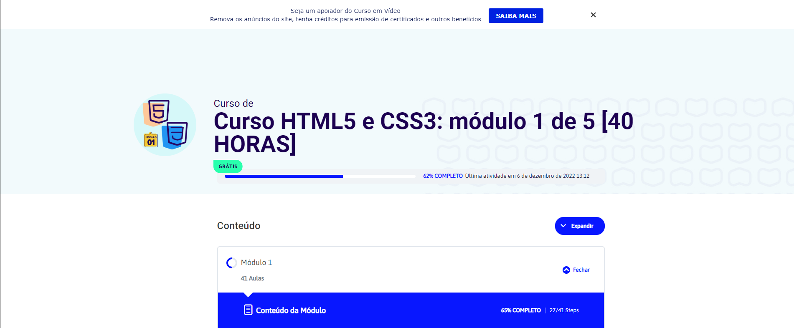
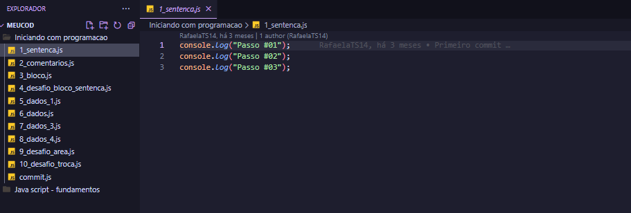
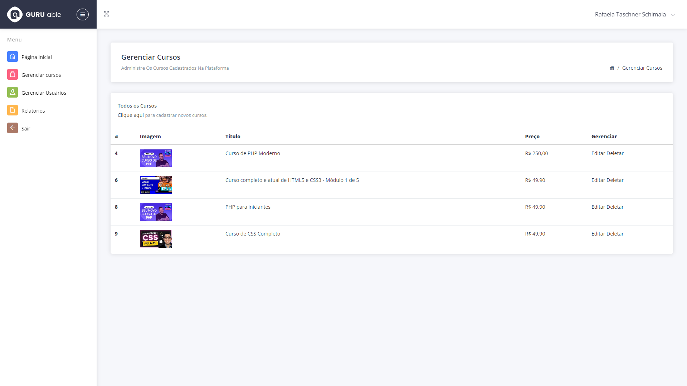

<!DOCTYPE html>
<html lang="pt-br">

<head>
    <meta charset="UTF-8">
    <meta http-equiv="X-UA-Compatible" content="IE=edge">
    <meta name="viewport" content="width=device-width, initial-scale=1.0">

    <link rel="preconnect" href="https://fonts.googleapis.com">
    <link rel="preconnect" href="https://fonts.gstatic.com" crossorigin>
    <link href="https://fonts.googleapis.com/css2?family=Roboto:wght@400;700&display=swap" rel="stylesheet">

    <link rel="icon" type="image/png" href="./assets/favicon.png" />
    <link rel="stylesheet" href="./stylenav.css">

    <title>Linha do Tempo</title>
</head>

<body>

</body>

</html>

<nav>
    <container class="memory">
        <h1>Início do interesse pela programação</h1>
        <small>24 de fevereiro de 2022</small>
        <div>
            
        </div>
        <p>Mesmo já tendo tido contato com a programação anteriormente, foi no início de 2022 que tudo mudou. Isso
            aconteceu devido ao meu ingresso como Suporte Técnico em uma empresa de desenvolvimento de software, o que
            facilitou minha entrada no meio.
        </p>
    </container>

    <container class="memory">
        <h2>Primeiro curso de desenvolvimento</h2>
                <small>20 de dezembro de 2022</small>
        <div>
            
        </div>
        <p>Iniciei meu primeiro curso de programação devido ao conselho de uma colega. Comecei com HTML5 e CSS3, mas
            infelizmente o curso não me pegou, e comecei a acreditar que, talvez, a carreira não fosse pra mim.
        </p>
    </container>

    <container class="memory">
        <h2>Segunda oportunidade na programação</h2>
                <small>21 de Fevereiro de 2023</small>
        <div>
            
        </div>
        <p>A segunda oportunidade programando veio de um outro colega, que me emprestou sua conta para que eu pudesse
            iniciar estudos em JavaScript. Foi nesse curso que me encontrei. No momento, o curso ainda está em
            andamento.
        </p>
    </container>

    <container class="memory">
        <h1>Meus cursos</h1>
        <h2>PHP Essencial</h2>
                <small>10 de Março de 2023</small>
        <div>
            
        </div>
        <p>Em PHP tive o contato mais profundo com o desenvolvimento. Foi em PHP que fiz meu primeiro CRUD com conexão
            ao
            banco de dados e aprendi o básico sobre SQL e sobre o funcionamento de banco de dados. Finalizei o curso em 08 de junho de 2023, com um projeto completo de EAD. <a target="_blank" href="https://github.com/RafaelaTS14/Ead-system"><strong>Clique aqui para ver mais.</strong></a>
        </p>    
    </container>

    <container class="social">
        <h1>Confira meu trabalho:</h1>
        <a href="https://www.linkedin.com/in/rafaela-schimaia-000a6b206" class="linkedin" target="_blank">Linkedin</a>
        <a href="https://github.com/RafaelaTS14" class="github" target="_blank">Github</a>
    </container>
</nav>
